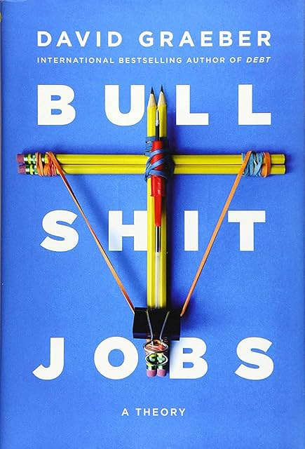

(Audio) Bullshit Jobs, by Graeber
Saturday September 7, 2024
“There is only one success – to be able to spend your life in your own way.” (Christopher Morley)
Graeber had a popular article and this is the book version. As with Rushkoff's, the titular concept is mostly a hook. I'm more interested in the critique of work generally.
The first part of the book, most directly on "bullshit jobs" and related surveys and interviews, isn't very good, compared to Graeber's Debt. He wants to have it both ways, for one thing: We must trust the people who say their jobs are bullshit, and at the same time not trust people who say their jobs aren't.
Then there's the definition of a bullshit job, which is never done quite consistently. I think it's supposed to be jobs that don't make any difference (if they aren't done, nothing changes). But this bleeds in at least two directions: Jobs where we may not like the difference they make, and jobs that wouldn't be necessary if things were set up differently.
So Graeber repeatedly criticizes Obama for using job preservation as a reason to not completely upend the health care system. If the current employees were all sent home, it would be bad: people wouldn't get insurance reimbursement, etc. The current jobs are only (or primarily) "bullshit" to Graeber because he thinks a single payer (or similar) system could take care of people with fewer employees.
And while I know part of Graeber's point is to critique the Puritan work ethic and "middle class thinking" in general, many of his malcontent subjects just aren't very sympathetic.
Graeber did an academic thesis on "life cycle service," the historical practice in northern Europe in which a young person would spend seven or so years as an apprentice or servant, with some other family, collecting some pay until they could set off on their own. I thought this was interesting in relation to the modern idea of FIRE (Financial Independence, Retire Early) in which a person similarly works for others until they have enough money to be independent and then does whatever they want.
Graeber talks a lot about "spiritual violence," and while this may be worse when a job feels pointless (see also Sayre's Law) I don't think it's unique to "bullshit jobs" but common to any job that has you doing what you really don't want to do. Hence the Morley quote about success as being "able to spend your life in your own way." People really like self-determination.
Graeber does connect at least a little bit with Black's Abolition of Work and the idea given book form in Fully Automated Luxury Communism. He spends some time on work as caring work rather than factory production. And he also comes out in support of UBI.
(Oh right - I read No more work back in 2018...)
